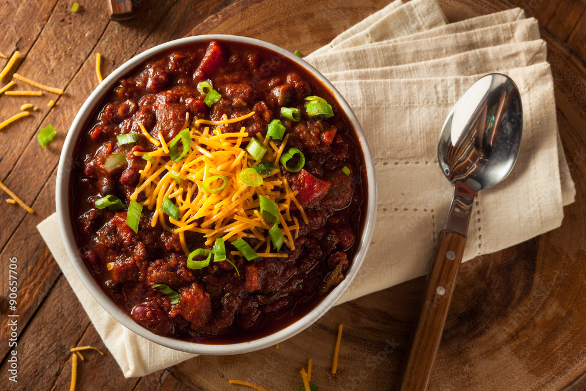

Chili
Home

This chili recipes is the outcome of many experiments.
Feel free to improvise heavily, I rarely stick to this 100%
Ingredients
- Lentils
- Carrots
- Black beans
- Kidney beans
- Bell peppers
- Canned diced tomatoes
- Chili peppers:
- Jalap
- Poblano
- Whatever they have that's spicy
- Sweet potato
Spice mix
- Chili powder
- Cumin
- Paprika
- Onion powder
- Garlic powder
- White pepper
- Cayanne pepper
- Salt
- Brown sugar
- Dried oregano
Crispy Sweet Potatoes
- Dice into small 1/2inch cubes
- Toss the cubes in some freestyle spices
- Crisp them up in the oven for 30 minutes, turn them a few times
Chili Steps
- Simmer lentils for 30 minutes
- Get the onions in the pot for 5 minutes
- Add garlic for 1 minute
- Add the carrots
- Bell peppers IN
- Add the spice mix to the pot and toast them
- Add the tinned tomatoes
- Add all the beans and lentils (now drained)
- Add broth as appropriate
- Low boil for an hour or so
- Serve with the crispy sweet potatoes and enjoy with lots of cheese